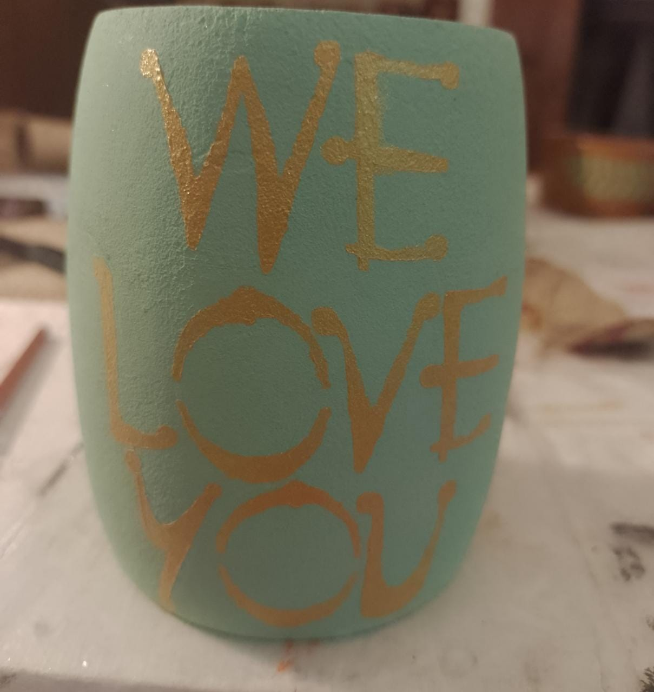

Products
Here at Arkadia Deco', we take our work seriously to offer you the best product. Here are some of them. First, we cure the Mate, so it is ready for use. Usually this is something you would do but why do we do it? Because in that way we make sure that the wood does not crack and ruin the work we do on the outside. After painting it with one of our designs or the one you choose, we give it a few coats of lacquer to ensure that the paint lasts much longer.
Hand Painted and lacquer

Hand Painted and lacquer

Hand Painted and lacquer

"Natural"
Personalized
Personalized
Personalized

"Yerbatero" where to store your yerba mate.